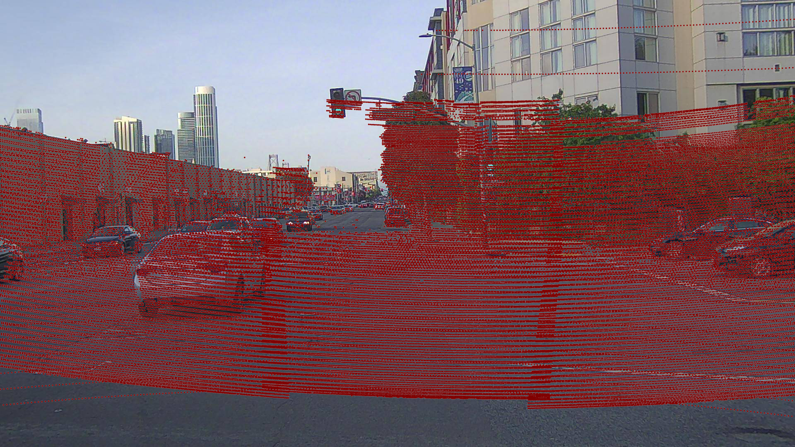
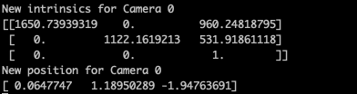

Camera Debugging¶
Debug Camera Extrinsic¶
Lidar Debugger¶
if __name__ == '__main__':
scene = create_scene(
'data/',
frames=range(1,6)
)
# Debugging methods
scene.get_frame(index=1).add_debug_lines() # add lines using the camera position and heading
scene.preview() # preview task
The method .add_debug_lines() in line 8 will add lines that begin
from the cameras’ positions and extend towards where they are directed
(for the first frame). This will help you to validate the cameras’
positions, and more importantly, the directions the cameras are
pointing.
Ones that is validated, you can see if the camera projection is correct.
Debug Camera Intrinsic¶
Image Projection¶
if __name__ == '__main__':
scene = create_scene(
'data/',
frames=range(1,6)
)
# Debugging methods
scene.get_projected_image(0).save(f'{DATA_PATH}/debug_{frame_id}.png')
# Aggregated view for 10 frames in depth mode, default each frame has a different color
scene.get_projected_image(0, frames_index=range(0,10), color_mode="depth").save(f'{DATA_PATH}/debug_{frame_id}.png')
The .get_projected_image(camera_id, color_mode) method projects the
point cloud onto camera images. You can project the points for multiple
frames at once with the frames_index argument, as shown in line 10.
The ``.save()``method, will save the image with the projected points from camera 0 of frame 1 into the specified path.
The end result should look similar to this:
See also
Projected_images support only Brown-Conrady and Cylindrical distortion
Manual camera calibration¶
if __name__ == '__main__':
scene = create_scene(
'data/',
frames=range(1,6)
)
# Debugging methods
scene.get_frame(0).manual_calibration(0)
Adding this line to your code will open a matplotlib window which will look like this:

Each camera extrinsic and intrinsic value will be displayed with a bar. Clicking on the bars will update the camera calibration values (please have in mind that the tool is not instant and takes some time to refresh the view). In the console, you should be able to see the new values for later usage in your code.
See also
Please try to use this as last option, since you’re going to ended up hardcoding the camera values instead of use the system values. Although this could be useful to validate the camera intrinsic before creating a task.
Additional Reading¶
Here are some useful articles that explain the concepts of camera extrinsic and intrinsic matrices.